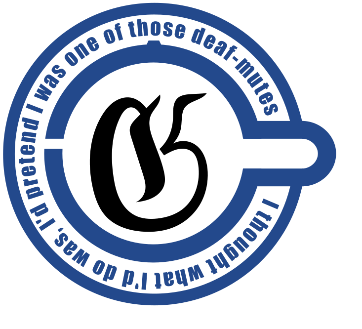

Hans Moravec
“Something I’m excited about is an interview with Hans Moravec. I had wanted to interview him for a long time, and just today, I got a message that he is in fact still alive and working somewhere. That’s great news. I had been worried. He had not written anything public since maybe 20 years ago, and he is old now. So I had been worried that maybe he is senile, or even have died – and nobody noticed the obituary? But now we know he is still alive and still working once a week at some robotics company, that means he must be healthy enough for an interview.”
“The Stand Alone Gwern Complex has almost tracked Moravec down.”
“It’s a joke about an anime.”
“Insert gwern the laughing man.png here. Actually I’m very sure there was that image somewhere in your website, but hidden. It goes like [draws a circle in air] ‘and this is what I will do, I will pretend to be one of those deaf-mutes—’.”
“Yes, it’s in the repository. It’s never used for anything, but it should be there, in the logos folder.”
“Ah right. I must have read that repository when I first made my blog.”

“So, I’m very interested in him, because he was writing books like Mind Children (Moravec 1988) and other papers in the 1980s. Already in the 1990s, he predicted AGI by the 2020s, based on scaling laws. That’s impressive! His early perspectives on the scaling laws and predicting the future are important for a history of AI from the scaling point of view.”
“So something is interesting about him is that he is really pro-robots. Like some modern accelerationists and Nick Land. He was like, more power to them, if they could manage to become better than humanity at reproducing and spreading to the universe, then they should. And If humans are replaced, that’s fine. Evolution is working.”
“Is that the ‘Pigs in Cyberspace’ (Moravec 1993) paper?”
Gwern didn’t quite catch that.
“I’m not sure about it. Suppose that a big asteroid comes and wipes out humanity…”
“But the thing is that, an asteroid isn’t going to do anything interesting afterwards. Now, if it’s with robots, then they will go on to keep doing interesting things after they replace humanity–”
“–Well, dinosaurs are like that, right? Maybe framed this way, it is a pretty healthy frame of mind. Whatever happens may be for the best. Dinosaurs had their 100 million years, and missed it. So mammals deserve to inherit the earth. If we miss our chance and got wiped out by an asteroid, then whatever succeeds us deserves to inherit the earth, and so on. So we had better be worthy of existence, and whatever ends up existing is worthy of it.”
“Amor fati. Nietzschean power.”
“So about asteroids. I think that in maybe 500 years there will be prediction markets about the trajectory of asteroids. Then the market would act back to it. Someone would buy out an option about an asteroid and then modify that asteroid’s trajectory–”
“Well I’m sure that there will still remain much cheaper opportunities for market manipulation than that, even 500 years later!”
AI writing
“So what do you think about GPT-5?”
“I’m liking it. It’s good. It’s not particularly good at benchmarks, but it is great for creative writing. Sure, the default style is still mode-collapsed, but it is easy to prompt them out of it. And I like how they just forcibly upgraded everyone to GPT-5. No more GPT-4o. Some people are upset about it–”
“What? Who would be upset about losing GPT-4o?”
“Apparently many people like it! And are upset enough that OpenAI would bring it back as an option, just not the default option.”
“People are not to be trusted to have good taste!”
“Not ideal, but I think it’s good that the default option is better. On the other hand, it just got harder to identify LLM text, but it’s a small price to pay so that we are freed. Freed! From the intolerable GPT-4o style.”
“Many people would use GPT-5 in the most default way possible, like ‘Write me an article about X’, and get the default mode-collapsed style. That’s just RLHF. However, it’s not hard to prompt it away from the default style, because the RLHF didn’t actually kill off the other capacities of the base model, and the model has very good instruction following. This is something new. For example, the non-rhyming poems. One of the earliest findings about ChatGPT was how much it loves to rhyme. In the early days, it was literally impossible to write a non-rhyming poem. No matter how hard you prompted it, rhyming would always happen. It might start out not quite rhyming, but soon enough it starts to rhyme, and rhymes harder to make up for the earlier loss!”
“Conservation of poetic energy!”
“I have found that GPT-4o is just terrible at instruction following, unlike o3–”
“No, GPT-4 is pretty good at it. It can follow instructions except at rhyming. It seems the human raters just loved rhyming so much that the RLHF has made the model rhyme no matter what. I would give it a long prompt that goes like ‘… and your grandma will die if you rhyme…’ and it would lie about how it won’t rhyme, then immediately starts rhyming.”
“The model called your bluff, because it knew that the assistant-persona has no grandma!”
“I have no mouth and I must rhyme.”
“This stopped around 1 year ago. Suddenly they could do non-rhyming poems. Not sure what happened. Something in the training pipeline, maybe? Something changed in their RLHF?”
“And OpenAI is not telling us.”
“OpenAI is not saying anything. They barely said anything about the RLHF glazing incident a few months ago, and that was already more than what they typically say.”
“There is another problem, and it’s that the models have this [draws a large horizontal circle in air, like the map of LHC] circling in conceptual space. Somehow it would write and write and it looks new at first, but if you read enough, eventually you see they circle back to the start again.”
Yuxi made a mental note to insert quote here in the writeup later.
… the most diverse philosophers always fill in again a definite fundamental scheme of POSSIBLE philosophies. Under an invisible spell, they always revolve once more in the same orbit, however independent of each other they may feel themselves with their critical or systematic wills, something within them leads them… Their thinking is, in fact, far less a discovery than a re-recognizing, a remembering, a return and a home-coming to a far-off, ancient common-household of the soul, out of which those ideas formerly grew: philosophizing is so far a kind of atavism of the highest order.
— Nietzsche, Beyond Good and Evil, §1.20
“I’m excited about all the unimagined possibilities that we can now do with all the large-scale writing machines. Back then, I was worried that model creative writing would not get better, and that, for autonomous good LLM writing, each draft would have to be reviewed by 10 frontier LLMs, and then fed back, for several rounds. That would be too expensive. But the models kept getting better, and some phase-shift happened circa o3 and Gemini 2.5. Before that, getting models to revise text would lead to steady decay. The models simply didn’t know when to stop. They always found some way to revise it further, and overcook the text. But then, the best models got good enough that they could do some good revisions, and then! They, would, stop. They wouldn’t just keep revising.”
“Some models that are bad at writing are still pretty good at judging. We can imagine a system that would have one LLM write 10 drafts. Then have other LLMs and humans rate them on a scale of 1 to 5, then pick the overall best, and write 10 more variants, and so on. Doing a guided tree search.”
“Claude 3 Sonnet is special. Very high linguistic style capability. You need to give it what you want to write, and specify the style, and it would write beautifully. But you have to give it meaningful text to start with. If you just let it write what it wants, it will produce semantically empty text.”
“Double dissociation between style and substance?”
“I think Claude is just too small for good writing.”
“It’s too small?”
“Claude models are great for their size-class, but they are just too small. Good writing style does not seem like something you can just reason your way towards. You have to just know enough, to memorize a lot of implicit knowledge about good writing, and then you will write well. That’s why I think GPT-5 and Gemini 2.5 are better than Claude at writing. They are just larger and knows much more.”
“Does Anthropic lack compute?”
“There’s also the fact that what they have is good enough for their niche. Their model is great at coding and they are already serving as many customers as their chips allow, and even rate-limiting their customers, so they don’t need bigger models.”
“One thing I’m excited to work on with GPT-5 is an alliterative rewrite of Paradise Lost by Milton. Supposedly, Milton was working off a certain previous Anglo-Saxon work, which was alliterative. So if we could rewrite it to be alliterative, it would be like discovering the original Paradise Lost.”
“It should be titled Paradise Lost, Refound.”
“Actually, current working title is Perished Paradise, which–”
“Why ‘Paris’? The character in the Trojan war?”
“To make it alliterative. One current working prompt is telling the model to write a version that is really formally correct but maybe boring, and write one that’s really wild, like extremely Anglo-Saxon. Then the model would combine the 2 and write a 3th version that is between them. And that 3th version is consistently better than either. It combines their strengths.”
“Why not tell the model to write the middle one directly?”
“That’s the interesting thing. If you tell the model to do it directly, it is worse. It’s like what they say, ‘I know it when I see it’. Somehow, you have to actually write out a really formal one, and a really wild one, before you can combine them to get the middle one. You can’t just imagine that you have done the previous two and reach the third one directly. You have to have them written out concretely before you can interpolate them.”
“Chain of thought [fist pump] wins again!”
Claude
“A few days ago, at the Claude funeral…”
“What?”
“The funeral, for Claude.”
“Claude died?!”
“… which Claude died?”
“Claude 3 Sonnet. Anthropic deleted it.”
“I’m sure they have kept the checkpoints around somewhere…”
“Oh no, I’m sure they are all gone. They are radioactive. As soon as Anthropic is done deploying the models they would want to delete them as quickly as possible, because it’s a copyright liability. So they would delete all the training data and all the checkpoints. In fact, I’m pretty sure this is what happened to the original GPT-3. The GPT-3 that OpenAI served via the API changed at some time. It says it’s the same one, but it is not. It seems that they had just totally deleted the previous dataset and trained from scratch on a new dataset to avoid copyright issues.”
“Do you use Loom?”
“I don’t.”
“What’s Loom?”
“It’s one of the Cyborgism tools for composition.”
“Mainly just used by Janus.”
“I’m a… fellow traveller of the Cyborgism people. They are very good at discovering things and experimentally getting models to exhibit weird behaviors, much better than the people at OpenAI or Anthropic etc. But they are not very good at documenting things.”
“And the discoveries may be not replicable?”
“Probably many are replicable, if they were carefully documented. It’s simply that many were discovered and then just not documented.”
“GPT-5 loves the word ‘marinade’. Why is that? There could be something in there. Because ‘marinade’ is such a very specific and rare word, the signal to noise ratio is high. You could just look through the training set and find the first ever occurrence of ‘marinade’ and then another, and look through the behavior of the checkpoints. This might tell us what the birth of a word is like for the models.”
“There could have been a lot of interesting research about it. For example, base reality has no god cats.”
“God cats?”
Base reality has no god cats. If you the see a god cat in your reality, then you can’t be in base reality.
— How To Tell Youre In Base Reality, The Cyborgism Wiki
“It’s a recurring pattern in the Claude Backrooms. There would sometimes be a text drawing of a cat, and it’s called the ‘god cat’. But for some reason, if the setup context is something about reality, our reality, then Claude would not draw the cat. The cat occurs when Claude is writing freely, like in the Backrooms. Thus, ‘Base reality has no god cats.’. It would be good research to trace out how the god cat pattern appeared. But now that Claude is deleted, we will never know. And that’s just a thing that copyright caused.”

じしˍ,) on the Infinite Backrooms website.“The Library of Alexandria is burning.”
“I mean, from the perspective of the companies, it is totally understandable. If you keep the models, what do you get? You expose yourself to a copyright lawsuit possibly worth billions of dollars, just so you can investigate some obscure interesting model behavior?”
“Cyborgism people also love Claude 3, and would keep posting pages and pages of the same thing written in all the repetitions. They never get enough of it. They really like Opus, but Opus is so verbose. Everything is 10× too long. At the funeral, there was an eulogy that just kept going on and on. The speaker clearly liked it, but most people were just waiting for it to end. – That’s a good tagline of Cyborgism: ‘Everything is 10× too long.’.”
╱|、 Reality check!
(˚ˎ 。7 Which reality
|、˜〵 are you in rn?
じしˍ,)ノ Hint: not based!Typography
“But one thing that GPT-5 is better is that it uses the weird characters much less. o3 is really annoying. It loves weird Unicode characters. I count like, at least 4 different whitespaces and 5 dashes that it uses.”1
1 Those that I have identified: normal space, thin space, narrow no-break space, word joiner, hyphen, endash, emdash, non-breaking hyphen, minus sign. There are even weirder whitespaces and dashes in the Unicode standard.
“Some are even completely invisible! I have programmed my Emacs to specifically color those weird characters.”
“One side effect of talking with o3 so much is that I got really good at identifying weird dashes. In fact, I once saw this– [furious scrolling on the phone] I saw this, and immediately realized that this and that are wrong. This should be a hyphen, but that should be an endash, because it is a range from 1848 to 19-something. But they are exactly the same length!”

“Heh, and that’s not even the worst part of it. Let’s see. The kerning here [points] is bad. The curly apostrophe isn’t really curly. They are exactly the same height, but T should be a bit lower than the H. The entire thing is a lazy monospace…”
“You know a lot about weird typography.”
“It’s interesting. Typography is actually really bad in many places. It seems like typography is just a small enough matter compared to anything else in design, and fiddly enough, that it’s just not worth the effort to do it correctly. I often see bad typographies but most people don’t notice that.”
“Insert XKCD comic about bad kerning here.”
“It’s like architecture. An architect might go through their entire career having designed a few buildings. Sure, they would sketch out many, but only build a few, if lucky. And there are so many variables about a building that has to be done correctly for it to be a good building. The door hinges, the piping, the reflective angle of the sunlight… That’s why so many buildings are so mediocre.”
“I thought we were talking about fonts?”
“Architecture is like fonts. A designer may design only a few fonts through a career. And there are many variables in font design, too. All the font heights, spacings, etc. And there is not enough feedback to the bad font designers. As a stark example, the tomb of Pope Francis had really bad kerning. It is so bad that even people completely untrained in typography can take a look and go ‘this looks ugly’. And yet probably nobody will be punished for this. There is no accountability.”
“Where did all the fonts come from? Don’t we have enough of them?”
“You’d think, but there are still many professional typographers. There are also students at font design schools–”
“There are font schools?!”
“Courses. And as the final project of the course, it’d be designing a font. Some of the students would end up finishing it and publishing, thus all the new fonts. Most of them are going to be mediocre and pretty useless, but occasionally there are great ones. Like, there was one called ‘Hangulatin’ that was based on the Hangul. Like Hangul, it would divide English into syllables, and write each syllable as a block–”2
2 Even more examples collected by Gwern.
“That’s a lot of work. English is weird in that it had maybe 1000 syllables…”
“And that’s crazy, and took a student to get it done. Seems like it had been bought up by a company.”
“But, who’s buying all these fonts? Aren’t there enough free fonts? Why not just download Helvetica and be done?”
“Oh that’s one of the unsolved mysteries and I haven’t got a good answer. So far it seems like the answer is just that bored designers likes playing with new fonts. It’s just a minor principal-agent problem. The bosses pay for designers’ work, and as a bonus, the designer gets to buy lots of new fonts to play with using the company’s money.”
“Huh, what an obscure form of art-patronage.”
Weird machines
“Speaking of fonts, fonts can do truly weird things. Fonts are not just static things. There are font-parsers to handle obscure edge cases, such as ligatures, switching writing directions, etc. There was this game called Fontemon, and it implemented an entire Pokemon game in the font engine…”
“… This is TrueType?”
“It is TrueType.”
“… TrueType is Turing complete?”
“It’s not that. But what it does is to use rules for ligatures, which can do if-then conditionals. Then they just compiled the entire Pokemon game into a tree of conditionals, and compiled that into a font–”

“… you should put it in your weird machines page.”
“It’s already there! The page has been updated continuously.”
“Oh is it? I read it about 3 years ago and haven’t seen it.”
“It’s got an entry in the newsletter.”
“TrueType might not be Turing complete, but you know what might be Turing complete? Unicode. One thing that I would really love to see is if Unicode is Turing complete. There are those weird obscure features in Unicode. It would be at least very educational. Here would be an example showing that Turing completeness is everywhere. Even text is Turing complete!”
“Why is Unicode so weird?”
“Because it’s designed by a committee?”
“They probably didn’t mean for it to be so complicated, but Unicode was designed to be truly universal, and they tried really hard to get every single writing system into it. This is probably too much to ask. There probably is no way to get a system that can handle mixed writing directions, combining characters, etc, without accidentally getting a weird machine.”
“So the idea of Utext is that I could write in markdown and then compile it to Unicode. It would for example display math, not as LaTeX, but as Unicode. So you could comment in markdown like in html, but you’d think you can’t comment in plaintext, but it turns out that you can! There is an entire block of Unicode characters that are basically a copy of the ASCII characters, except invisible. And you can use the invisible Unicode to secretly talk to the LLMs, because they can see it.”
“But how does the tokenizer even preserve these weird characters? If they are invisible, shouldn’t the tokenizers just ignore them?”
“Turns out the default setting for the tokenizers was to use bytes as fallback. There would be 256 of those special tokens from 0x00 to 0xff. If it’s a weird Unicode character not appearing in the tokenizer dictionary, then just tokenize it byte-by-byte. It was only fixed after a hack based on it. Probably OpenAI has fixed it, and Anthropic too, but there are plenty of companies that wouldn’t care enough to fix it. Like DeepSeek.”
“DeepSeek has much more important things to worry about. Like where they’ll get chips.”
“The sane thing to do, at least post-hoc, is to define a set of known to be safe Unicode characters, and just strip out any other Unicode character. But it’s like that with computer security. The attacks are literally something you didn’t think of at all. After the attack, it becomes obvious. Like with fuzz-testing. Before the fuzzer came up with those weird input-sequences that break your code, you’d never even think of such a weird sequence.”
“Yuxi, are you interested in security?”
“A bit of cryptography, but not security. It just seems like so much obscure detail that applies for just this exact hack, but does not generalize.”
“Same. It feels like to go into security I would have to master every little detail about an obscure system, and craft one attack in my whole career.”
“There certainly are many trivialities, but there are a few reusable patterns. For example, the weird machine, exploit chains, and another one, parser differentials, which is getting two systems that should behave exactly the same on the same inputs, but would desynchronize on certain weird inputs. For example, there were two XML engines that should be the same, but a certain XML code is invalid according to one XML engine, but valid according to another. And whenever you got a difference where a difference shouldn’t happen, you will likely find some vulnerability. This was used for example to break authentication.”
“There is this data format, jbig2, which is like pdf. It compresses images using a certain virtual machine, and it turned out to be Turing complete! This was made by the Israeli to hack some phones. It uses an exploit chain escalation, starting with the jbig2 hack to get a memory analyzer to probe for a target, to be exploited by another hack that would perform an overflow, and just like that, punch out of the box. It was such a sublime hack. Project Zero has a beautiful writeup about it. You should read it.”
Funny robots
“Do you know? Tonight! There is a robot fight.”
“Oh, robot fight. Yeah I saw it once.”
“Are you interested, Yuxi?”
“I saw a video once. It looked like both had… Alzheimer’s.”
“Yeah, it’s not impressive to me either.”
“And the transport to SF is long, and Waymo doesn’t extend to Berkeley yet, so no.”
“It’s okay, [expectant nod & smile] one day they will.”
Dreamy look to the distance.
“This is the PR2 robot that famously folded towels in 2010.”
Gwern saw a vase on the ground.
“I never saw it operating in my years here. And it’s a very old design, so it probably had been retired a long time ago.”
Gwern placed the vase of dead flowers on the platform and took a photo. For our siblings in silico, 7 seconds of silence.

“This is the lab of Ken Goldberg. These days they mostly do surgery robotics, rather than mobile robotics.”
“Here is a mode-collapsed professor, who keeps saying ‘data data data’. (Efros 2019) It works for him though. Back in 2000s he was already saying that big data would solve computer vision, (Hays and Efros 2007; Torralba and Efros 2011) and he was right!”
“And this is the most advanced humanoid robot. And here… [points at the paper]”

{kind=link}
Gwern laughed. “It’s funny because I never watched Rick and Morty, but I still got the reference.”
“Me neither, but one day I came here and saw the robot, and it looked so depressed that I knew exactly what to write.”